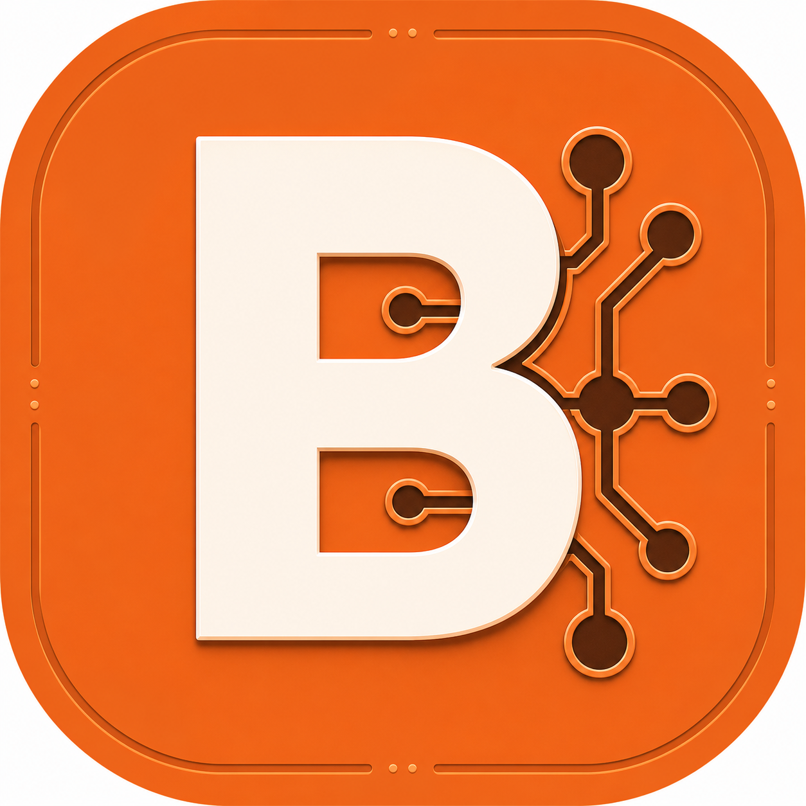

Разбор процесса
Определяем роли, данные, сервисы, точки потерь и критерии готового результата.

BARASKIN LABСтудия AI-автоматизации
Проектируем CRM, ботов, API-интеграции и быстрые AI-MVP. Сначала показываем кликабельный прототип, затем подключаем реальные данные и запускаем систему.
Напишите, какой процесс сейчас делается вручную и какие сервисы уже используются. Открыть рабочие демо


Как мы снижаем риск
Не начинаем с месяцев разработки. Фиксируем сценарий, показываем интерфейс и только после согласования собираем рабочую интеграцию.
Определяем роли, данные, сервисы, точки потерь и критерии готового результата.
Показываем ключевой сценарий до основной разработки — его можно открыть и проверить.
Подключаем API, CRM, базы и мессенджеры небольшими проверяемыми этапами.
Кейсы студии
Четыре новых демо собраны по повторяющимся заказам с бирж. Ещё четыре — уже работающие проекты из портфолио.
Опишите процесс в двух предложениях. Мы покажем ближайший сценарий и предложим первый этап.
Что делает студия
Поиск и квалификация лидов, анализ сообщений и звонков, подготовка следующего действия.
Bitrix24, базы, вебхуки, поля, воронки и двусторонний обмен с внешними системами.
Telegram- и WhatsApp-сценарии: публикации, уведомления, рассылки и обработка заявок.
Кликабельные веб-прототипы и компактные бизнес-системы для проверки идеи до большой разработки.
Стоимость
Итоговая оценка зависит от API, объёма данных и ролей. До старта фиксируем состав первого этапа и критерии приёмки.
Команда под задачу: интерфейс, логика и интеграции собираются в одном процессе без передачи клиента между подрядчиками.
Кликабельная модель ключевого процесса до подключения реальных данных.
Система с одной главной задачей, реальными данными и базовой автоматизацией.
CRM, мессенджеры, базы и внешние сервисы работают как единый процесс.
Процесс
Разбираем процесс, роли, данные, сервисы и ограничения.
Показываем интерфейс и сценарий на кликабельном прототипе.
Подключаем реальные API, базу, CRM и бизнес-логику.
Тестируем, запускаем и передаём документацию.
Частые вопросы
Он показывает интерфейс и сценарий до дорогой разработки. Можно проверить логику, собрать обратную связь и точнее оценить интеграционный этап.
Опишите, что сейчас делается вручную, кто участвует в процессе и какие сервисы уже используются. Ссылки на CRM, API-документацию и примеры ускорят оценку.
Да. Мы работаем с существующими CRM, CMS, Laravel-админками, базами и внешними API. Перед стартом проверяем доступы и ограничения.
Да. На странице есть интерактивные демо AI-агента, Bitrix24-интеграции, WhatsApp-рассылок и WooCommerce AI, а также уже работающие проекты.
Мы задаём уточняющие вопросы, фиксируем первый этап, стоимость и критерии готовности. После согласования показываем промежуточный результат и двигаемся дальше по этапам.
Что написать студии
Контакт
Напишите в Telegram, какие сервисы уже используются и что должно происходить автоматически. Мы предложим первый этап и ориентир по стоимости.